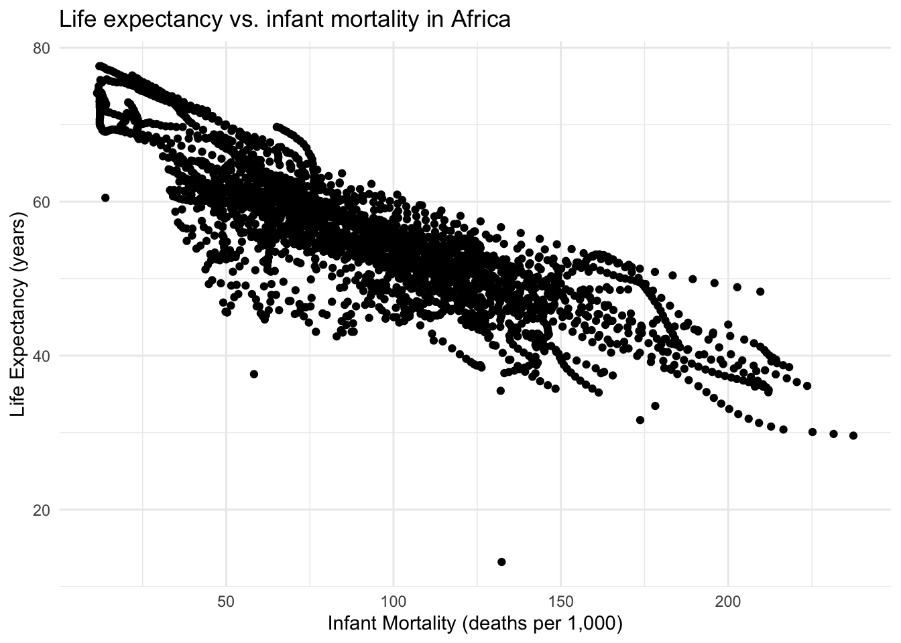
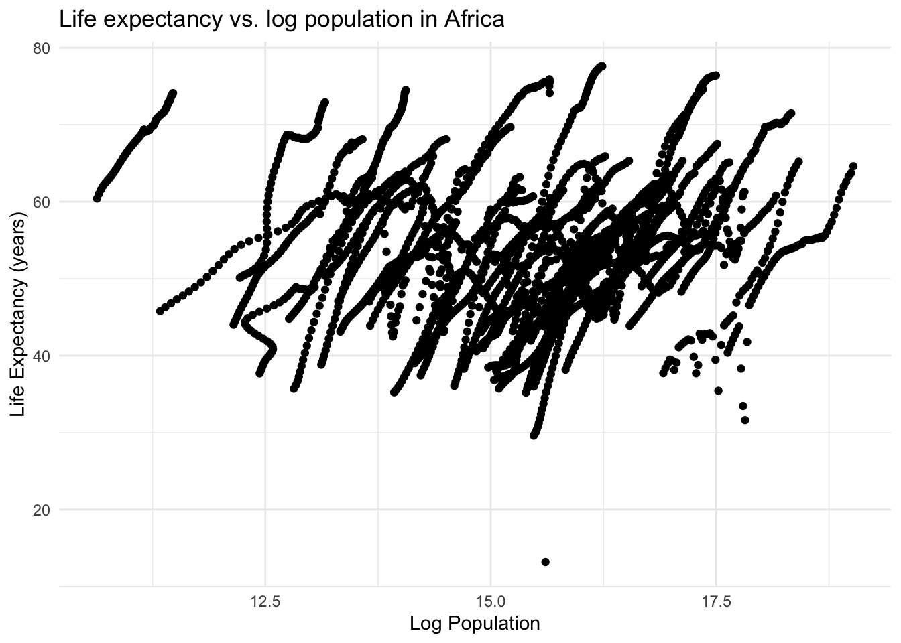
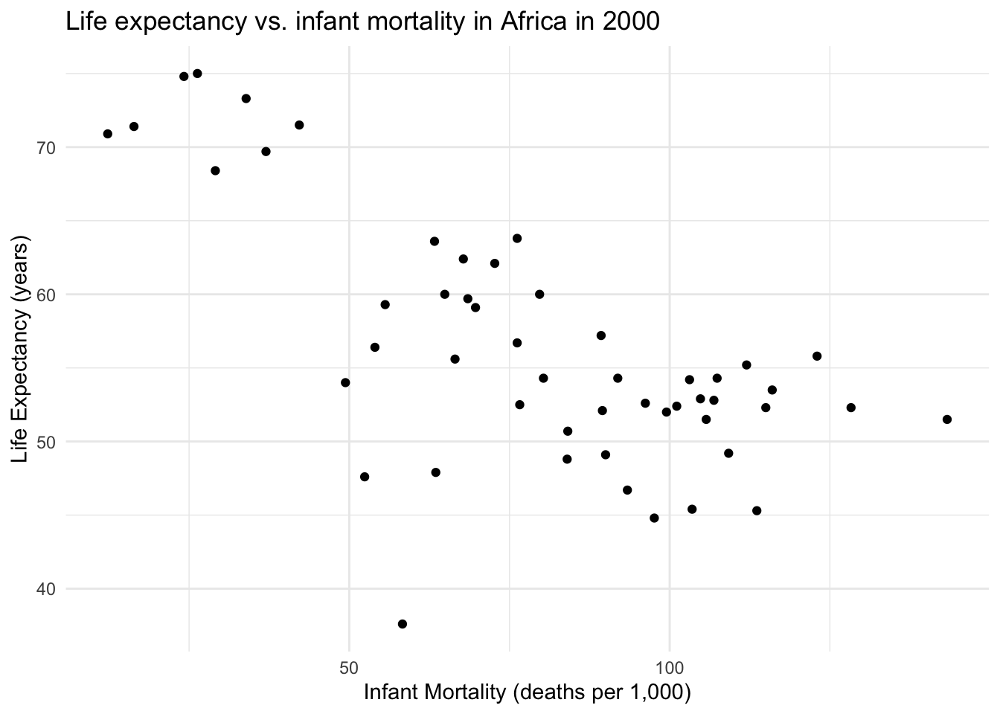
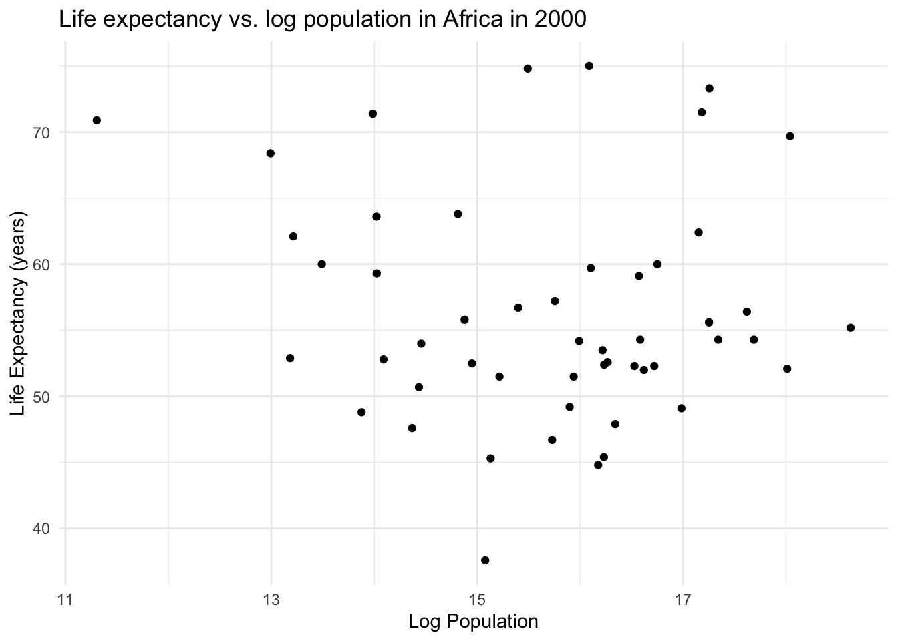
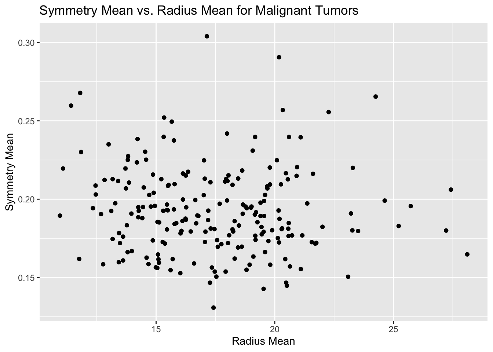
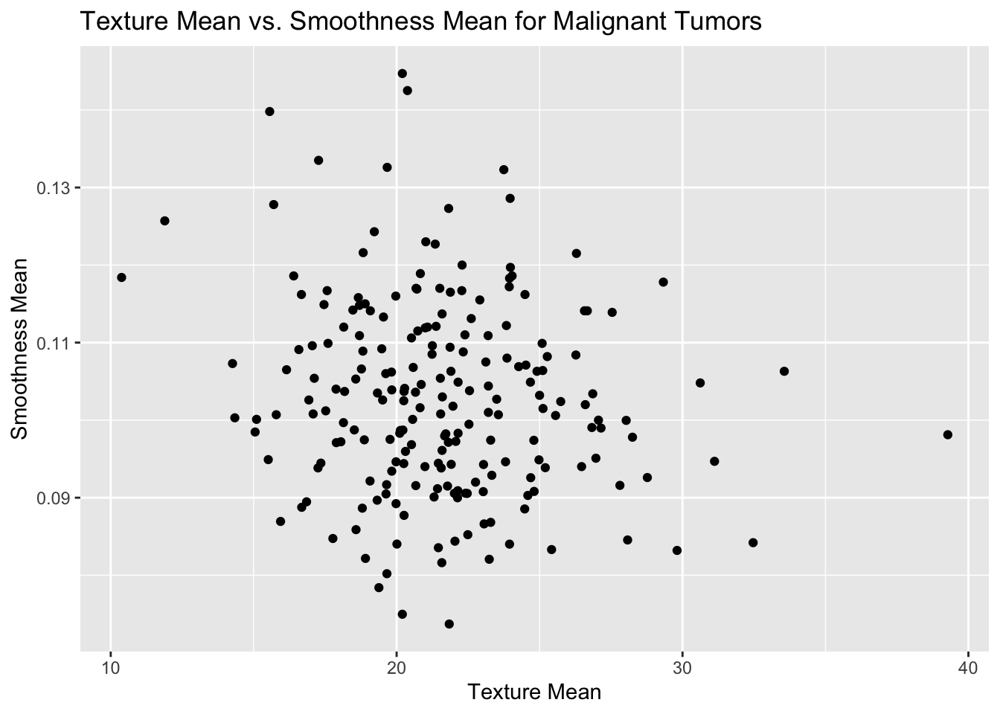

#Load the dslabs package to get the gapminder dataset and other necessary packageslibrary(dslabs)library(dplyr)
Attaching package: 'dplyr'
The following objects are masked from 'package:stats':
filter, lag
The following objects are masked from 'package:base':
intersect, setdiff, setequal, union
library(ggplot2)library(tidyr)
#Exploratory analysis of the gapminder dataset#Use the help method to get a data descriptionhelp("gapminder")#Get an overview of data structurestr(gapminder)
'data.frame': 10545 obs. of 9 variables:
$ country : Factor w/ 185 levels "Albania","Algeria",..: 1 2 3 4 5 6 7 8 9 10 ...
$ year : int 1960 1960 1960 1960 1960 1960 1960 1960 1960 1960 ...
$ infant_mortality: num 115.4 148.2 208 NA 59.9 ...
$ life_expectancy : num 62.9 47.5 36 63 65.4 ...
$ fertility : num 6.19 7.65 7.32 4.43 3.11 4.55 4.82 3.45 2.7 5.57 ...
$ population : num 1636054 11124892 5270844 54681 20619075 ...
$ gdp : num NA 1.38e+10 NA NA 1.08e+11 ...
$ continent : Factor w/ 5 levels "Africa","Americas",..: 4 1 1 2 2 3 2 5 4 3 ...
$ region : Factor w/ 22 levels "Australia and New Zealand",..: 19 11 10 2 15 21 2 1 22 21 ...
#Get a data summarysummary(gapminder)
country year infant_mortality life_expectancy
Albania : 57 Min. :1960 Min. : 1.50 Min. :13.20
Algeria : 57 1st Qu.:1974 1st Qu.: 16.00 1st Qu.:57.50
Angola : 57 Median :1988 Median : 41.50 Median :67.54
Antigua and Barbuda: 57 Mean :1988 Mean : 55.31 Mean :64.81
Argentina : 57 3rd Qu.:2002 3rd Qu.: 85.10 3rd Qu.:73.00
Armenia : 57 Max. :2016 Max. :276.90 Max. :83.90
(Other) :10203 NA's :1453
fertility population gdp continent
Min. :0.840 Min. :3.124e+04 Min. :4.040e+07 Africa :2907
1st Qu.:2.200 1st Qu.:1.333e+06 1st Qu.:1.846e+09 Americas:2052
Median :3.750 Median :5.009e+06 Median :7.794e+09 Asia :2679
Mean :4.084 Mean :2.701e+07 Mean :1.480e+11 Europe :2223
3rd Qu.:6.000 3rd Qu.:1.523e+07 3rd Qu.:5.540e+10 Oceania : 684
Max. :9.220 Max. :1.376e+09 Max. :1.174e+13
NA's :187 NA's :185 NA's :2972
region
Western Asia :1026
Eastern Africa : 912
Western Africa : 912
Caribbean : 741
South America : 684
Southern Europe: 684
(Other) :5586
#Determine the type of object that gapminder isclass(gapminder)
[1] "data.frame"
#Data processing#Create a subset of the data just containing countries from Africaafricadata <- gapminder %>%filter(continent =="Africa")#Examine the structure of the Africa-specific datastr(africadata)
'data.frame': 2907 obs. of 9 variables:
$ country : Factor w/ 185 levels "Albania","Algeria",..: 2 3 18 22 26 27 29 31 32 33 ...
$ year : int 1960 1960 1960 1960 1960 1960 1960 1960 1960 1960 ...
$ infant_mortality: num 148 208 187 116 161 ...
$ life_expectancy : num 47.5 36 38.3 50.3 35.2 ...
$ fertility : num 7.65 7.32 6.28 6.62 6.29 6.95 5.65 6.89 5.84 6.25 ...
$ population : num 11124892 5270844 2431620 524029 4829291 ...
$ gdp : num 1.38e+10 NA 6.22e+08 1.24e+08 5.97e+08 ...
$ continent : Factor w/ 5 levels "Africa","Americas",..: 1 1 1 1 1 1 1 1 1 1 ...
$ region : Factor w/ 22 levels "Australia and New Zealand",..: 11 10 20 17 20 5 10 20 10 10 ...
summary(africadata)
country year infant_mortality life_expectancy
Algeria : 57 Min. :1960 Min. : 11.40 Min. :13.20
Angola : 57 1st Qu.:1974 1st Qu.: 62.20 1st Qu.:48.23
Benin : 57 Median :1988 Median : 93.40 Median :53.98
Botswana : 57 Mean :1988 Mean : 95.12 Mean :54.38
Burkina Faso: 57 3rd Qu.:2002 3rd Qu.:124.70 3rd Qu.:60.10
Burundi : 57 Max. :2016 Max. :237.40 Max. :77.60
(Other) :2565 NA's :226
fertility population gdp continent
Min. :1.500 Min. : 41538 Min. :4.659e+07 Africa :2907
1st Qu.:5.160 1st Qu.: 1605232 1st Qu.:8.373e+08 Americas: 0
Median :6.160 Median : 5570982 Median :2.448e+09 Asia : 0
Mean :5.851 Mean : 12235961 Mean :9.346e+09 Europe : 0
3rd Qu.:6.860 3rd Qu.: 13888152 3rd Qu.:6.552e+09 Oceania : 0
Max. :8.450 Max. :182201962 Max. :1.935e+11
NA's :51 NA's :51 NA's :637
region
Eastern Africa :912
Western Africa :912
Middle Africa :456
Northern Africa :342
Southern Africa :285
Australia and New Zealand: 0
(Other) : 0
#Create a new subset of the africa data only containing data on infant mortality and life expectancyafrica1 <- africadata %>%select(c('infant_mortality', 'life_expectancy'))#Examine the structure of the first subsetstr(africa1)
'data.frame': 2907 obs. of 2 variables:
$ infant_mortality: num 148 208 187 116 161 ...
$ life_expectancy : num 47.5 36 38.3 50.3 35.2 ...
summary(africa1)
infant_mortality life_expectancy
Min. : 11.40 Min. :13.20
1st Qu.: 62.20 1st Qu.:48.23
Median : 93.40 Median :53.98
Mean : 95.12 Mean :54.38
3rd Qu.:124.70 3rd Qu.:60.10
Max. :237.40 Max. :77.60
NA's :226
#Create a new subset of the africa data only containing data on population and life expectancyafrica2 <- africadata %>%select(c('population', 'life_expectancy'))#Examine the structure of the second subsetstr(africa2)
'data.frame': 2907 obs. of 2 variables:
$ population : num 11124892 5270844 2431620 524029 4829291 ...
$ life_expectancy: num 47.5 36 38.3 50.3 35.2 ...
summary(africa2)
population life_expectancy
Min. : 41538 Min. :13.20
1st Qu.: 1605232 1st Qu.:48.23
Median : 5570982 Median :53.98
Mean : 12235961 Mean :54.38
3rd Qu.: 13888152 3rd Qu.:60.10
Max. :182201962 Max. :77.60
NA's :51
#Data plotting#Plot life expectancy as a function of infant mortalityggplot(africa1, aes(x = infant_mortality, y = life_expectancy)) +geom_point() +#Make it a scatter plotlabs(title ="Life expectancy vs. infant mortality in Africa",x ="Infant Mortality (deaths per 1,000)",y ="Life Expectancy (years)" ) +#Add plot title and axis labelstheme_minimal() #Clean theme
Warning: Removed 226 rows containing missing values or values outside the scale range
(`geom_point()`).

#Plot life expectancy as a function of populationggplot(africa2, aes(x =log(population), y = life_expectancy)) +geom_point() +#Make it a scatter plotlabs(title ="Life expectancy vs. log population in Africa",x ="Log Population",y ="Life Expectancy (years)" ) +#Add plot title and axis labelstheme_minimal() #Clean theme
Warning: Removed 51 rows containing missing values or values outside the scale range
(`geom_point()`).

The plot of life expectancy vs. infant mortality shows a slight negative association. The plot of life expectancy vs. log population shows a strong positive association between population size and life expectancy. The data displayed in both graphs, especially in the second graph shows individualized trends in life expectancy. This is likely because data for every year included in the dataset is included in the plot, showing individual trends within countries as well as overall trends in the continent.
#Further data processing#Find the year with the most data (non-NA values) for infant mortalitymost_data_year <- africadata %>%#Make a copy of the africa datagroup_by(year) %>%#Group by yearsummarize(non_na_count =sum(!is.na(infant_mortality))) %>%#Count non-NA values, summarize in new columnarrange(desc(non_na_count)) #Sort non_na_count in descending order#Display year with most dataprint(most_data_year)
By inspecting the number of available infant mortality data points by year, complete data is available from 1982-2015. Years before and after that period have at least one missing data point. For further analysis, I will focus on the year 2000.
#Filter africa data to only include the year 2000africadata_2000 <- africadata %>%filter(year ==2000)#Plot life expectancy as a function of infant mortality in the year 2000ggplot(africadata_2000, aes(x = infant_mortality, y = life_expectancy)) +geom_point() +#Make it a scatter plotlabs(title ="Life expectancy vs. infant mortality in Africa in 2000",x ="Infant Mortality (deaths per 1,000)",y ="Life Expectancy (years)" ) +#Add plot title and axis labelstheme_minimal() #Clean theme

#Plot life expectancy as a function of populationggplot(africadata_2000, aes(x =log(population), y = life_expectancy)) +geom_point() +#Make it a scatter plotlabs(title ="Life expectancy vs. log population in Africa in 2000",x ="Log Population",y ="Life Expectancy (years)" ) +#Add plot title and axis labelstheme_minimal() #Clean theme

After plotting only the data from 2000, a negative association was still seen between life expectancy and infant mortality. However, no clear association can be seen between population size and infant mortality using only data from 2000.
#Regression modeling#Fit a linear model predicting life expectancy from infant mortality with data from 2000lm1 <-lm(life_expectancy ~ infant_mortality, africadata_2000)summary(lm1) #Present summary statistics of the linear model
Call:
lm(formula = life_expectancy ~ infant_mortality, data = africadata_2000)
Residuals:
Min 1Q Median 3Q Max
-22.6651 -3.7087 0.9914 4.0408 8.6817
Coefficients:
Estimate Std. Error t value Pr(>|t|)
(Intercept) 71.29331 2.42611 29.386 < 2e-16 ***
infant_mortality -0.18916 0.02869 -6.594 2.83e-08 ***
---
Signif. codes: 0 '***' 0.001 '**' 0.01 '*' 0.05 '.' 0.1 ' ' 1
Residual standard error: 6.221 on 49 degrees of freedom
Multiple R-squared: 0.4701, Adjusted R-squared: 0.4593
F-statistic: 43.48 on 1 and 49 DF, p-value: 2.826e-08
#Fit a linear model predicting life expectancy from log population with data from 2000lm2 <-lm(life_expectancy ~log(population), africadata_2000)summary(lm2) #Present summary statistics of the linear model
Call:
lm(formula = life_expectancy ~ log(population), data = africadata_2000)
Residuals:
Min 1Q Median 3Q Max
-19.113 -4.809 -1.554 3.907 18.863
Coefficients:
Estimate Std. Error t value Pr(>|t|)
(Intercept) 65.3243 12.5203 5.217 3.65e-06 ***
log(population) -0.5711 0.7943 -0.719 0.476
---
Signif. codes: 0 '***' 0.001 '**' 0.01 '*' 0.05 '.' 0.1 ' ' 1
Residual standard error: 8.502 on 49 degrees of freedom
Multiple R-squared: 0.01044, Adjusted R-squared: -0.009755
F-statistic: 0.517 on 1 and 49 DF, p-value: 0.4755
From the linear model fitting life expectancy from infant mortality, I can conclude that infant mortality is a significant predictor of life expectancy (t = -6.594, p < 0.001). From the linear model fitting life expectancy from log population size, I cannot conclude that population size is a significant predictor of life expectancy (t = -0.719, p = 0.476).
#This part is contributed by Hope Grismer. #Exploratory analysis of the Breast Cancer Wisconsin Diagnostic Dataset from UCI Machine Learning Repository dataset
#Use the help method to get a data descriptionhelp(brca)#Get an overview of data structurestr(brca)
Length Class Mode
x 17070 -none- numeric
y 569 factor numeric
#Determine the type of object that death probability data set isclass(brca)
[1] "list"
#Data processing of brca data to only include the associated data of the malignant tumors#Create a subset of the data just malignant tumors, used this syntax instead of filter as it is a list not a data.frame# Extract indices of malignant tumorsmalignant_indices <-which(brca$y =="M")# Subset the features (x) based on the indicesmalignant_tumors_features <- brca$x[malignant_indices, ] # View the first few rows of the malignant tumors' featureshead(malignant_tumors_features)
# Creating new objects to store the symmetry mean and radius mean data for the malignant tumorssymmetry_mean_malignant <- malignant_tumors_features[, "symmetry_mean"]radius_mean_malignant <- malignant_tumors_features[, "radius_mean"]# View the first few rows of the extracted variableshead(symmetry_mean_malignant)
[1] 0.2419 0.1812 0.2069 0.2597 0.1809 0.2087
head(radius_mean_malignant)
[1] 17.99 20.57 19.69 11.42 20.29 12.45
# Create a data frame for plottingmalignant_tumor_data <-data.frame(radius_mean = radius_mean_malignant,symmetry_mean = symmetry_mean_malignant)# Create the scatter plotggplot(malignant_tumor_data, aes(x = radius_mean, y = symmetry_mean)) +geom_point() +labs(x ="Radius Mean",y ="Symmetry Mean",title ="Symmetry Mean vs. Radius Mean for Malignant Tumors" )

# Creating new objects to store the nucleus texture mean (standard deviation of grayscale values) and smoothness mean data for the malignant tumors texture_mean_malignant <- malignant_tumors_features[, "texture_mean"]smoothness_mean_malignant <- malignant_tumors_features[, "smoothness_mean"]
# Create a data frame for plottingmalignant_tumor_data <-data.frame(texture_mean = texture_mean_malignant,smoothness_mean = smoothness_mean_malignant)# Create the scatter plotggplot(malignant_tumor_data, aes(x = texture_mean, y = smoothness_mean)) +geom_point() +labs(x ="Texture Mean",y ="Smoothness Mean",title ="Texture Mean vs. Smoothness Mean for Malignant Tumors" )

#Regression modeling for the brca data set#Fit a linear model predicting the mean nuclear symmetry from the mean nuclear radius of the malignant tumors lm3 <-lm(symmetry_mean_malignant ~ radius_mean_malignant, data = malignant_tumor_data) summary(lm3) #Present summary statistics of the linear model
Call:
lm(formula = symmetry_mean_malignant ~ radius_mean_malignant,
data = malignant_tumor_data)
Residuals:
Min 1Q Median 3Q Max
-0.062137 -0.018015 -0.003442 0.016858 0.110878
Coefficients:
Estimate Std. Error t value Pr(>|t|)
(Intercept) 0.2044241 0.0105368 19.401 <2e-16 ***
radius_mean_malignant -0.0006594 0.0005935 -1.111 0.268
---
Signif. codes: 0 '***' 0.001 '**' 0.01 '*' 0.05 '.' 0.1 ' ' 1
Residual standard error: 0.02762 on 210 degrees of freedom
Multiple R-squared: 0.005843, Adjusted R-squared: 0.001109
F-statistic: 1.234 on 1 and 210 DF, p-value: 0.2678
#Fit a linear model predicting nuclear texture in the form of standard deviation of grayscale from the nuclear smoothness (local variation in radius lengths)lm4 <-lm(texture_mean_malignant ~ smoothness_mean_malignant, data = malignant_tumor_data)#Present summary statistics of the linear modelsummary(lm4)
Call:
lm(formula = texture_mean_malignant ~ smoothness_mean_malignant,
data = malignant_tumor_data)
Residuals:
Min 1Q Median 3Q Max
-10.5561 -2.3959 -0.1349 1.9000 17.4689
Coefficients:
Estimate Std. Error t value Pr(>|t|)
(Intercept) 26.044 2.122 12.273 <2e-16 ***
smoothness_mean_malignant -43.142 20.470 -2.108 0.0363 *
---
Signif. codes: 0 '***' 0.001 '**' 0.01 '*' 0.05 '.' 0.1 ' ' 1
Residual standard error: 3.749 on 210 degrees of freedom
Multiple R-squared: 0.02071, Adjusted R-squared: 0.01605
F-statistic: 4.442 on 1 and 210 DF, p-value: 0.03626
From the linear model fitting mean nuclear symmetry from from the mean nuclear radius of the malignant tumors, I cannot conclude that mean nuclear symmetry is a significant predictor of mean nuclear radius (p-value: 0.2678). From the linear model fitting nuclear texture in the form of standard deviation of grayscale from the nuclear smoothness, I can conclude that nuclear texture is a significant predictor of nuclear smoothness (p-value: 0.03626)